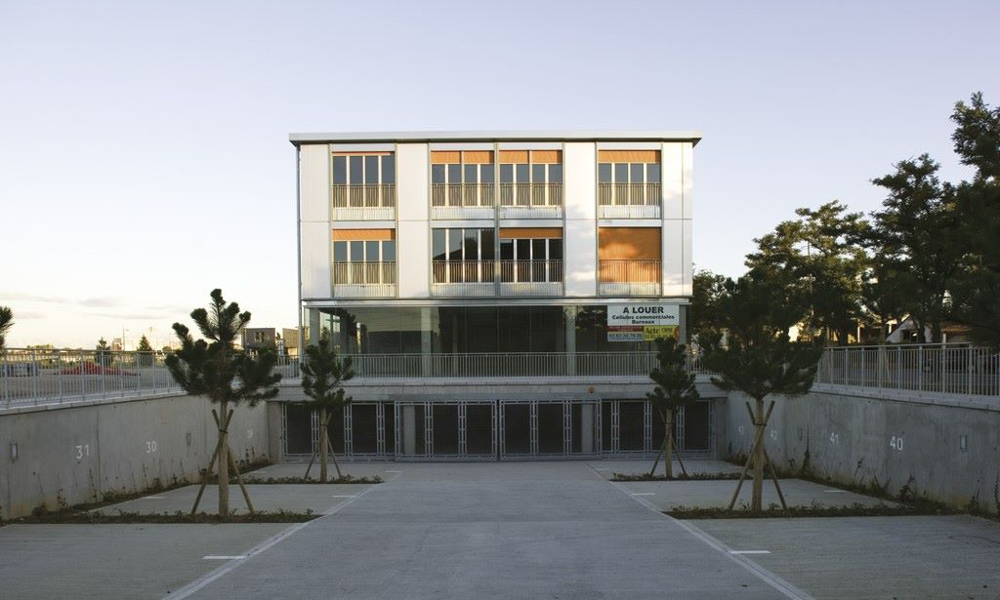

Survolez l'image et agrandissez/réduisez la vue à l'aide de la molette.
Budget: 3 700 000 € HT
Surface: 3900 m²
Date début: 2003
Date fin: 2007
Maîtrise d'ouvrage: SOCOGIM
Co-traitant(s): bureau des paysages
Description:
L’immeuble est situé sur la limite nord-ouest de la ZAC, le long du boulevard d’Austrasie, proche du site de l’ancien
octroi et de l’axe historique Charles III. Le quartier, qui va devenir un pôle d’activités diverses (bureaux, centre nautique,
Centre régional de musique actuelle...) s’inscrit dans la trace de l’ancien parcellaire en lanière, de part et d’autre du
bras vert qui borde le fleuve.
Le sol ne pouvant être excavé en raison de la présence des anciennes fondations du
site industriel, le parking est en léger creux, traité comme une rue publique qui pénètre à l’intérieur du bâtiment. Cet
élément génère la structure de l’architecture tout entière, très simple et épurée. Mediaparc est une réponse directe
aux règles de constructibilité établies, une mise à l’épreuve du système urbain mis en place pour la ZAC. Les matériaux
qui le composent énoncent un langage brut et affirmé : du béton et du bois à l’intérieur, de l’aluminium et de l’acier
galvanisé pour les façades.
Un rez-de-chaussée transparent, des grandes fenêtres et une toiture végétale qui domine
l’immeuble offrent différentes vues sur le quartier en transformation et suscitent un dialogue avec le paysage du site.
Aux abords, un système de recueil des eaux pluviales rend l’immeuble autonome en ressources d’eau. La conception
du bâtiment s’étend jusqu’au contour de ces fossés qui règlent son système de fonctionnement interne.
{kind=link}